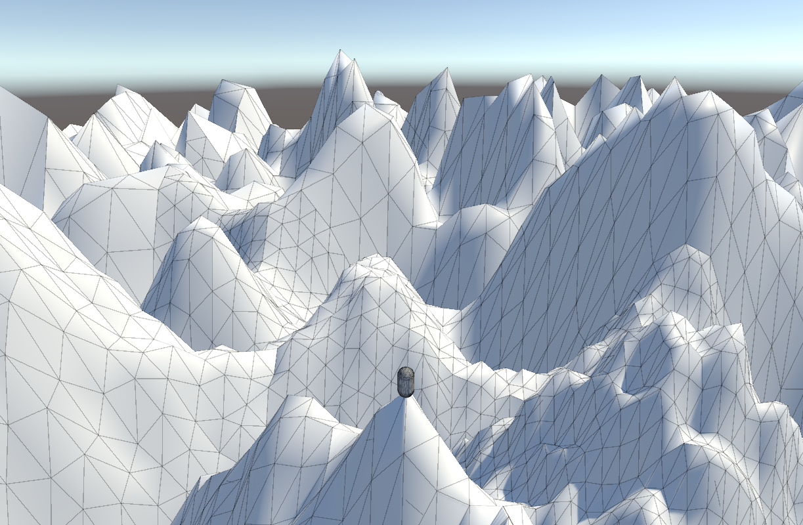
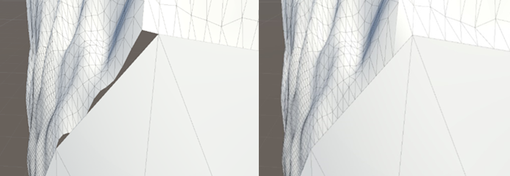
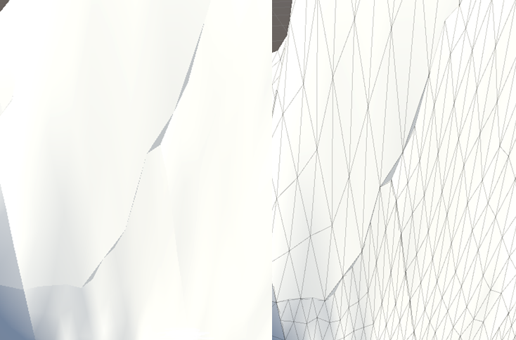
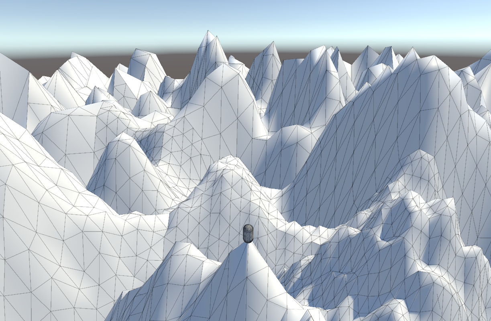
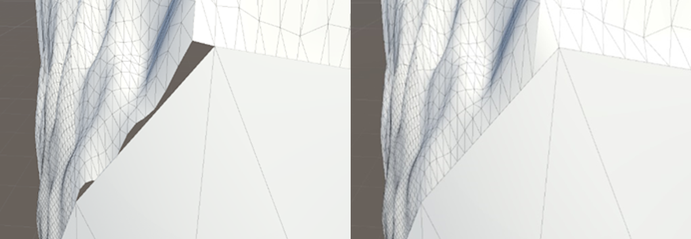
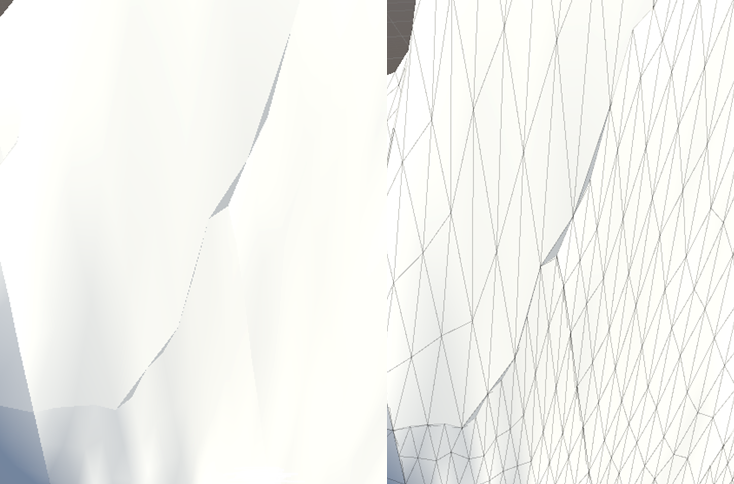

Developing Algorithms for Crack-Free Rendering of a Quad-Tree LOD Algorithm
For my BSc degree, I chose to create a project that approaches the problem of T-Junctions along borders of mesh chunks which would create cracks within the terrain that allowed a player to see through.
The project targetted three different algorithms to address this problem:
- Generate a boundary around the chunk pointing downwards.
- Generate this boundary but point it outwards.
- Move individual vertices up or down to match the neighbouring node height.
The project involved learning skills such as Terrain and Mesh generation, implementing and manipulating Quad-Trees and evaluating algorithms effectively.
diss_write_up.pdf <- Dissertation write-up
github repository <- Repository
 




